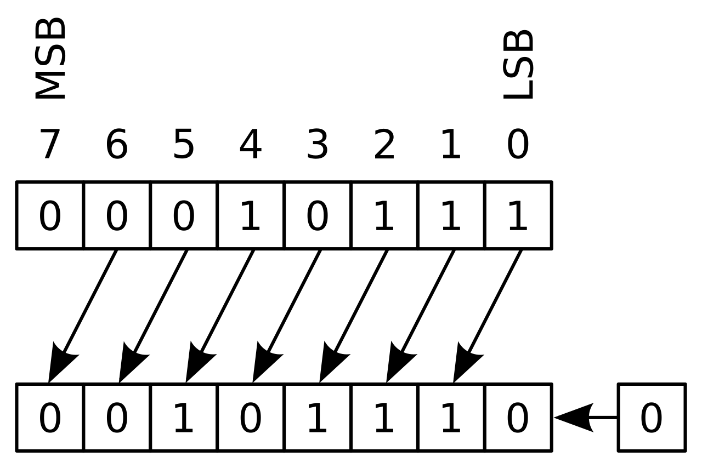
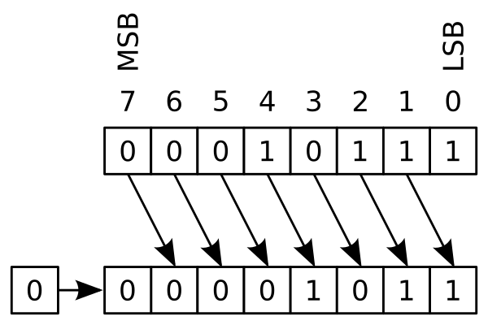

Оператори та вирази (англ. "Operators and Expressions")
Більшість statements (логічних рядків), які ви пишете, міститимуть вирази. Простим прикладом виразу є 2 + 3. Вираз можна розбити на оператори та операнди.
Оператори — це певний функціонал, який виконує певні дії та який може бути представлений такими символами, як наприклад «+», або спеціальними ключовими словами. Операторам потрібні деякі дані для роботи, і такі дані називаються операндами. У цьому випадку "2" і "3" є операндами.
Оператори (англ."Operators")
Ми коротко розглянемо оператори та їх використання.
Зверніть увагу, що ви можете обчислити вирази, наведені у прикладах, використовуючи інтерпретатор інтерактивно. Наприклад, щоб перевірити вираз 2 + 3, скористайтесь інтерактивним командним рядком інтерпретатора Python:
>>> 2 + 3
5
>>> 3 * 5
15
>>>
Ось короткий огляд доступних операторів:
-
+(Плюс, англ."plus")- Підсумовує два об'єкта
3 + 5дорівнює8.'a' + 'b'дорівнює'ab'.
-
-(Мінус, англ."minus")- Дає віднімання одного числа від іншого; якщо перший операнд відсутній, він вважається нульовим.
-5.2дасть негативне число, а50 - 24дасть26.
-
*(Mноження, англ. "multiply")- Видає множення двох чисел або повертає рядок, що повторюється задане число разів.
2 * 3дорівнює6.'la' * 3дорівнює'lalala'.
-
**(Піднесення до степеня, англ."power")- Повертає число х, зведене в ступінь y
3 ** 4дорівнює81(тобто3 * 3 * 3 * 3)
-
/(Ділення, англ. "divide")- Ділить x на y
13 / 3дорівнює4.333333333333333
-
//(Цілочисельний поділ, англ. "divide and floor")- Розділіть x на y та округліть відповідь вниз до найближчого цілого значення. Зауважте, що якщо одне зі значень є числом з плаваючою комою, ви отримаєте значення з плаваючою комою.
13 // 3дорівнює4-13 // 3дорівнює-59//1.81дорівнює4.0
-
%(Поділ по модулю, англ. "modulo")- Повертає залишок від ділення
13 % 3дорівнює1.-25.5 % 2.25дорівнює1.5.
-
<<(Оператори зсуву вліво на задану кількість біт, англ."left shift" )- Зсуває біти числа вліво на задане число позицій. (Кожне число представлено в пам’яті бітами або двійковими цифрами, тобто 0 і 1)
2 << 2дорівнює8. У двійковій системи числення2представляє собою10.- Зрушення вліво на 2 біта дає «1000», що у десятковій системи числення означає 8.
-
>>(Оператори зсуву вправо на задану кількість біт, англ."right shift")- Зсуває біти числа вправо на задане число позицій.
11 >> 1дорівнює5.- У двійковій системи числення
11представлено в бітах як1011яке при зсуві вправо на 1 біт дорівнює101і яке є десятковим5.
-
&(Побітове І, англ."bit-wise AND")- Побітова операція І над числами: якщо обидва біти дорівнюють
1, то результат дорівнює1. В іншому випадку це0. 5 & 3дорівнює1(0101 & 0011дорівнює0001)
- Побітова операція І над числами: якщо обидва біти дорівнюють
-
|(Побітове АБО, англ."bit-wise OR")- Побітова операція АБО над числами: якщо обидва біти дорівнюють
0, результат0. В іншому випадку це1. 5 | 3дорівнює7(0101 | 0011дорівнює0111)
- Побітова операція АБО над числами: якщо обидва біти дорівнюють
-
^(Побітове виключне АБО, англ."bit-wise XOR")- Побітова операція виключне АБО над числами: якщо обидва біти (
1 або 0) однакові, результат дорівнює0. В іншому випадку це1. 5 ^ 3дорівнює6(O101 ^ 0011дорівнює0110)
- Побітова операція виключне АБО над числами: якщо обидва біти (
-
~(Побітове НЕ, англ."bit-wise invert")- Побітова операція НЕ для числа x відповідає -(x+1)
~5дорівнює-6. Детальніше на http://stackoverflow.com/a/11810203
-
<(Менше ніж, англ."less than")- Визначає чи вірно те, що x менше за y. Усі оператори порівняння повертають
TrueабоFalse. Зверніть увагу на написання цих імен з великої літери. 5 < 3дорівнюєFalse, а3 < 5дорівнюєTrue.- Можна складати довільні ланцюжки:
3 < 5 < 7даєTrue.
- Визначає чи вірно те, що x менше за y. Усі оператори порівняння повертають
-
>(Більше ніж, англ."greater than")- Визначає чи вірно те, що x більше за y
5 > 3повертаєTrue. Якщо обидва операнди є числами, вони спочатку перетворюються на однаковий тип. В іншому випадку завжди повертаєтьсяFalse.
-
<=(менше або дорівнює, англ."less than or equal to")- Визначає чи вірно те, що x менше або дорівнює y
x = 3; y = 6; x <= yповертаєTrue
-
>=(більше або дорівнює, англ." greater than or equal to")- Визначає чи вірно те, що x більше або дорівнює y
x = 4; y = 3; x >= 3повертаєTrue
-
==(дорівнює, англ."equal to")- Порівнює, чи однакові об'єкти
x = 2; y = 2; x == yповертаєTruex = 'str'; y = 'stR'; x == yповертаєFalsex = 'str'; y = 'str'; x == yповертаєTrue
-
!=(не дорівнює, англ."not equal to")- Порівнює, якщо об'єкти не рівні
x = 2; y = 3; x != yповертаєTrue
-
not(логічне НЕ, англ."boolean NOT")- Якщо x дорівнює
True, оператор повернеFalse. Якщо ж x дорівнюєFalse, отримаємоTrue. x = True; not xповертаєFalse.
- Якщо x дорівнює
-
and(логічне І, англ."boolean AND")x and yповертаєFalse,якщо x дорівнюєFalse,в протилежному випадку(х=True) повертає значення yx = False; y = True; x and yповертаєFalseоскільки x є False. У цьому випадку Python не обчислюватиме y, оскільки він знає, що ліва частина виразу «and» має значення «False», що означає, що весь вираз буде «False» незалежно від інших значень. Це називається скороченою оцінкою булевих (логічних) виразів (англ. "short-circuit evaluation").
-
or(логічне АБО, англ."boolean OR")- Якщо x дорівнює
True, він повертає True, в протилежному випадку отримаємо значення y x = True; y = False; x or yповертаєTrue.Тут також застосовується скорочена оцінка виразів.
- Якщо x дорівнює
Короткий запис математичних операцій та привласнення
Зазвичай виконується математична операція над змінною, а потім привласнюється результат цієї операції тій самій змінній, отже, для таких виразів існує скорочення:
a = 2
a = a * 3
можна записати як:
a = 2
a *= 3
Зверніть увагу, що вирази виду var = var operation expression("змінна = змінна операція
вираз") стає var operation= expression("змінна операція = вираз").
Порядок обчислення (англ. "evaluation Order")
Якщо у вас є такий вираз, як «2 + 3 * 4», спочатку виконується додавання чи множення? Шкільний курс математики говорить нам, що спочатку потрібно виконати множення. Це означає, що оператор множення має вищий пріоритет, ніж оператор додавання.
У наcтупній таблиці нижче наведено пріоритет операторів Python, починаючи з самого найнижчого пріоритету (найслабше зв'язування, англ."least binding") до найвищого пріоритету (найсильніше зв'язування, англ."most binding"). Це означає, що у будь-якому вираженні Python спочатку оцінить оператори та вирази, розташовані нижче в таблиці, а потім ті, що перераховані вище в таблиці.
Для повноти опису наведено наступну таблицю, взяту з Посібника мови Python (англ."Python reference manual"). Набагато краще використовувати дужки для відповідного групування операторів і операндів, щоб явно вказати порядок обчислення виразів. Це робить програму більш читабельною. Див. Зміна порядку оцінювання (англ. "Changing the Order of Evaluation") нижче для отримання додаткової інформації.
lambda: Лямбда-вираз (англ."Lambda Expression")if - else: Умовний вираз (англ."Conditional expression")or: Логічне АБО (англ."Boolean OR")and: Логічне І (англ."Boolean AND")not x: Логічне НЕ (англ."Boolean NOT")in, not in, is, is not, <, <=, >, >=, !=, ==: Порівняння, включаючи тести на приналежність і тести на тотожність|: Побітове АБО (англ."Bitwise OR")^: Побітове ВИКЛЮЧНО АБО (англ."Bitwise XOR")&: Побітове I (англ."Bitwise AND")<<, >>: Зміщеня (англ."Shifts")+, -: Додавання і віднімання(англ."Addition and subtraction")*, /, //, %: Множення, ділення, цілочисельне ділення та залишок від ділення (англ."Multiplication", "Division", "Floor Division" and "Remainder")+x, -x, ~x: Позитивне, негативне, побітове НЕ (англ."Positive", "Negative", "bitwise NOT")**: Піднесення до степеня (англ." Exponentiation")x[index], x[index:index], x(arguments...), x.attribute: Звернення за індексом,зріз,виклик функції, посилання на атрибут (англ."Subscription", "slicing", "call", "attribute reference")(expressions,..), [expressions,..], {key: value,..}, {expressions...}: Зв’язка або кортеж, список, словник, множина (англ."Binding or tuple display, "list display", "dictionary display", "set display")
Оператори, які ми ще не зустрічали, будуть пояснені в наступних розділах.
Оператори з однаковим пріоритетом містяться в одному рядку у наведеній вище таблиці. Наприклад, «+» і «-» мають однаковий пріоритет.
Зміна порядку обчислення {англ."Changing the Order Of Evaluation"}
Щоб зробити вирази більш зрозумілими, ми можемо використовувати круглі дужки.Наприклад, 2 + (3 * 4) легше зрозуміти, ніж 2 + 3 * 4, яке вимагає знання пріоритетів операторів. Як і в усьому іншому, дужки слід використовувати розумно (не перестарайтеся) і вони не повинні бути зайвими, як у (2 + (3 * 4)).
Є додаткова перевага використання круглих дужок - це допомагає нам змінити порядок обчислення. Наприклад, якщо ви хочете, щоб додавання обчислювалося перед множенням у виразі, ви можете написати щось на зразок (2 + 3) * 4.
Асоціативність
Оператори зазвичай обробляються зліва направо. Це означає, що оператори з однаковим пріоритетом обчислюються зліва направо. Наприклад, "2 + 3 + 4" обчислюється як "(2 + 3) + 4".
Вирази (англ. "Expressions")
Приклад (зберегти як expression.py):
довжина = 5
ширина = 2
площа = довжина * ширина
print('Площа дорівнює', площа)
print('Периметр дорівнює', 2 * (довжина + ширина))
Висновок:
$ python expression.py
Площа дорівнює 10
Периметр дорівнює 14
Як це працює
Довжина і ширина прямокутника зберігаються в однойменних змінних (довжина та ширина) відповідно. Ми використовуємо їх для обчислення площі та периметра прямокутника за допомогою виразів. Ми зберігаємо результат виразу довжина * ширина у змінній площа, а потім друкуємо його за допомогою функції print. У другому випадку ми безпосередньо використовуємо значення виразу 2 * (довжина + ширина) у функції друку.
Також зверніть увагу на те, як Python "гарно друкує" результат. Навіть незважаючи на те, що не вказано пробіл у кінці речення у лапках 'Площа дорівнює', Python розміщує його для нас, щоб ми отримали чистий гарний результат, і програма стала набагато читабельнішою таким чином (оскільки не потрібно турбуватися про пробіли в рядках, які ми використовуємо для виведення(друку)). Це приклад того, як Python полегшує життя програміста.
Резюме
Ми побачили, як використовувати оператори, операнди та вирази - це основні будівельні блоки будь-якої програми. Далі ми побачимо, як використовувати їх у наших програмах за допомогою statements (операторів).
-- Від перекладачa --
Розуміння двійкових цифр
Двійкове число (англ."binary number") - це число, виражене у двійковій системі числення, використовуючи лише два різні символи, як 0 і 1.
Щоб краще зрозуміти двійкову систему числення, давайте спочатку розглянемо більш популярну десяткову систему числення, англ."decimal numeral system":
Вона містить 10 різних символів (0,1,2,3,4,5,6,7,8 і 9).
Щоб записати число більше 9, потрібно використати 2 або більше таких символів.
Наприклад, щоб записати число тридцять шість у десятковій системі, потрібно написати:
36
Тридцять шість — це двозначне число, тобто для його опису потрібні два символи.
Якщо читати обидва символи зліва направо, вони утворюють інструкцію обчислення:
36 (двозначне число) розрахувати: 3 x 10 + 6 x 1 = 30 + 6 = 36
Цікава частина цього полягає в тому, що лівий символ (3) має бути обчислений на 10, а правий символ (6) має бути обчислений на одиницю, а сума обох операцій представляє число.
Щоб записати число, більше 99, потрібні три цифри. Наприклад, щоб записати число дев'ятсот сорок два, потрібно написати:
942 (тризначне число) читати зліва направо: 9 x 100 + 4 x 10 + 2 x 1 = 900 + 40 + 2 = 942
Оскільки число складається з трьох цифр, перший символ потрібно помножити на 100, другий на 10 і третій на 1.
Цю десяткову систему числення також називають системою з основою 10.
Коефіцієнти для множення символів на (1,10,100,...) можна записати у вигляді степенів основи 10:
100 = 1 101 = 10 102 = 100 103 = 1000 і так далі...
Інструкцію з розрахунку числа 942 також можна записати так:
942: 9 x 102 + 4 x 101 + 2 x 100 = 9 x 100 + 4 x 10 + 2 x 1 = 900 + 40 + 2 = 942
Двійкова система числення
Двійкова система має основу не 10, а 2:
20 = 1 21 = 2 22 = 4 23 = 8 24 = 16 25 = 32 26 = 64 27 = 128 і так далі...
Однозначні числа в двійковій системі можуть відображати тільки числа 0 і 1:
щоб виразити число нуль, ви пишете:
0: 0 x 20 = 0 x 1 = 0
щоб виразити число один, ви пишете:
1: 1 x 20 = 1 x 1 = 1
і для будь-якого числа, більшого за 1, необхідно більше цифр.
Для числа два ви пишете 10:
10 (binary): 1 x 21 + 0 x 20= 1 x 2 + 0 x 1= 2 (decimal)
Для числа три ви пишете 11:
11 (binary): 1 x 21 + 1 x 20= 1 x 2 + 1 x 1= 2 + 1 = 3 (decimal)
А для числа чотири потрібні вже три цифри:
100 (у двійковій системі, чотири у десятковій системі) 1 x 22 + 0 x 21 + 0 x 20= 1 x 4 + 0 x 2 + 0 x 1 = 4 + 0 + 0 = 4
Двійкові числа проти десяткових чисел
У цій таблиці порівнюються десяткова та двойкова системи числення
| 10-ва система | розрахунок | написання | 2-ва система | розрахунок |
|---|---|---|---|---|
| 0 | 0x100 | нуль | 0 | 0x20 |
| 1 | 1x100 | один | 1 | 1x20 |
| 2 | 2x100 | два | 10 | 1x21+0x20 |
| 3 | 3x100 | три | 11 | 1x21+1x20 |
| 4 | 4x100 | чотири | 100 | 1x22+0x21+0x20 |
| 5 | 5x100 | п'ять | 101 | 1x22+0x21+1x20 |
| 6 | 6x100 | шість | 110 | 1x22+1x21+0x20 |
| 7 | 7x100 | сім | 111 | 1x22+1x21+1x20 |
| 8 | 8x100 | вісім | 1000 | 1x23+0x22+0x21+0x20 |
| 9 | 9x100 | дев'ять | 1001 | 1x23+0x22+0x21+1x20 |
| 10 | 1x101+0x100 | десять | 1010 | 1x23+0x22+1x21+0x20 |
| 11 | 1x101+1x100 | одинадцять | 1011 | 1x23+0x22+1x21+1x20 |
| 12 | 1x101+2x100 | дванадцять | 1100 | 1x23+1x22+0x21+0x20 |
| 13 | 1x101+3x100 | тринадцять | 1101 | 1x23+1x22+0x21+1x20 |
| 14 | 1x101+4x100 | чотирнадцять | 1110 | 1x23+1x22+1x21+0x20 |
| 15 | 1x101+5x100 | п'ятнадцять | 1111 | 1x23+1x22+1x21+1x20 |
| 16 | 1x101+6x100 | шістнадцять | 10000 | 1x24+0x23+0x22+0x21+0x20 |
Як перетворити двійкову систему у десяткову
Необхідно записати основу (2) у степені (цифр):
як перетворити число з основою 2 1001 на число з основою 10 (`9):
| число у двійковій системі: | 1 | 0 | 0 | 1 |
|---|---|---|---|---|
| степінь: | 3 | 2 | 1 | 0 |
| = | 23 | 22 | 21 | 20 |
| = | 8 | 4 | 2 | 1 |
| розрахунок: | 8 + | 0 + | 0 + | 1= |
| результат: 9 |
У Pyhton ви можете просто написати префікс 0b перед числом, щоб вказати, що ви використовуєте двійкову систему. Python миттєво перетворює число на десяткову систему:
>>>0b1001
9
Як перетворити десяткову систему у двійкову
Вам потрібно записати основу (2) у степені (цифри). Потім ви починаєте справа наліво встановлювати піднесення до степеня з основою 2 у порядку зростання, до того моменту поки сума всіх встановлених бітів є меншою або дорівнює числу з основою 10.
Приклад:
як перетворити число з основою 10 (37) у число з основою 2 (100101):
| степінь: | 5 | 4 | 3 | 2 | 1 | 0 |
| -- | -- | -- | -- | -- | -- | -- |
| | 25 | 24 | 23 | 22 | 21 | 20 |
| | 32 | 16 | 8 | 4 | 2 | 1 |
| встановлений біт: | 1 | 0 | 0 | 1 | 0 | 1 |
| 37 = | 32+|0+|0+|4+|0+|1|
| двойкова система: 100101 |||||||
У Python ви просто використовуєте вбудовану функцію bin(), щоб перетворити число з основою 10 у число з основою 2 (з префіксом 0b):
>>>bin(37)
'0b100101'
Оператори зсуву вліво на задану кількість біт (англ."left shift operation")
Дивіться також статтю у Вікіпедії про Logical Shift
Операцію зсуву вліво можна виконати лише для двійкового числа (з основою 2). Простіше кажучи, усі числа переміщуються ліворуч, а крайні праві позиції заповнюються нулями. Знаком оператора є <<, і ви можете вказати, на скільки позицій ліворуч мають бути переміщені числа.
Приклад: виконайте операцію "зрушення вліво на 1" над двійковим числом 1001 (дев'ять за основою 10). Результат: 10010 (вісімнадцять за основою 10).
python код (left_shift.py):
print("У двійковій системі:")
print("0b1001<<1")
print("=")
print(bin(0b1001<<1))
print()
print("У десятковій системі:")
print(0b1001, "<<1 =", 0b1001<<1)
Висновок:
У двійковій системі:
0b1001<<1
=
0b10010
У десятковій системі:
9 <<1 = 18
Зображення нижче зі статті у Вікіпедії:
MSB = старший біт, LSB = молодший значущий біт
Зауважте, що біт, якби старший біт (MSB, число 7) був би 1, результуюче число було б більшим, як у прикладі вище.

Опис зображення: 0001 0111 (десяткове число 23) логічно зсувається на один біт вліво, результат 0010 1110 (десяткове число 46).
Image rights: By en:User:Cburnett - This W3C-unspecified vector image was created with Inkscape ., CC BY-SA 3.0, Link
Оператори зсуву вправо на задану кількість біт (англ."right shift operation")
Дивіться також статтю у Вікіпедії про Logical Shift
Операція зсуву вправо працює трохи подібно до операції зсуву вліво: усі числа переміщуються праворуч, крайні ліві позиції заповнюються нулями, а числа, які були в крайній правій позиції, просто видаляються.
Знаком оператора є >>, і ви можете вказати, на скільки позицій праворуч слід перемістити кожне число.
Приклад: виконайте операцію «зсув праворуч на 1» над двійковим числом 1001 (дев’ять за основою 10). Результатом є 0100 і зазвичай записується без нуля на початку як 100 (чотири за основою 10).
python код (right_shift.py):
print("У двійковій системі:")
print("0b1001>>1")
print("=")
print(" "+bin(0b1001>>1))
print()
print("У десятковій системі:")
print(0b1001, ">>1 =", 0b1001>>1)
Висновок:
У двійковій системі:
0b1001>>1
=
0b100
У десятковій системі:
9 >>1 = 4
Зображення нижче зі статті у Вікіпедії:
MSB = старший біт, LSB = молодший значущий біт
Зауважте, що на зображенні нижче молодший значущий біт (LSB) знищується 
Опис зображення: 0001 0111 (десяткове число 23) логічно зсувається на один біт вправо,результат буде: 0000 1011 (десяткове число 11)
Image rights: By en:User:Cburnett - This W3C-unspecified vector image was created with Inkscape ., CC BY-SA 3.0, Link
Логічні оператори python (boolean operators)
| значення A | значення B | результат для AND | результат для OR |
|---|---|---|---|
True |
True |
True |
True |
True |
False |
False |
True |
False |
True |
False |
True |
False |
False |
False |
False |
Логічне НЕ (NOT)
Оператор NOT дає значення інвертування: True стає False, а False стає True.
| операція | результат |
|---|---|
not True |
False |
not False |
True |
Логічне І (AND)
Оператор AND повинен бути розміщений між двома логічними значеннями. Результатом буде True, якщо обидва логічні значення True, інакше результат буде False
| значення A | AND | значення B | результат |
|---|---|---|---|
True |
AND | True |
= True |
True |
AND | False |
=False |
False |
AND | True |
=False |
False |
AND | False |
=False |
Логічне АБО (OR)
Оператор АБО має бути розміщено між двома логічними значеннями. Результат є True, якщо одне або обидва значення є True. Результатом буде False, якщо обидва значення є False.
| значення A | OR | значення B | результат |
|---|---|---|---|
True |
OR | True |
= True |
True |
OR | False |
=True |
False |
OR | True |
=True |
False |
OR | False |
=False |
Логічні операції з двійковими цифрами (boolean operations with binary digits)
Логічні операції (and, or, xor, not) можуть бути застосовані не лише до логічних значень (True і False), а й безпосередньо до бітів (де 1 означає True, а 0 означає False).
У Python є логічні команди not or and для логічних значень, але є також спеціальний набір команд для двійкових цифр:
~ Побітове НЕ (for bitwise inversion)
| Побітове АБО (for bitwise OR)
& Побітове І (for bitwise AND)
^ Побітове виключне АБО (for bitwise XOR)
Побітове НЕ (bitwise inversion)
~ (bit-wise invert)
- Побітова операція НЕ для числа x відповідає -(x+1).
Значення: до числа додається 0b01 і змінюється знак.
print("Приклад 1:")
print("Припустимо x становить 1001")
print("Побітове НЕ те саме, що -(x+1)")
print("Обчислювання x+1 наступне : 1001 + 0001")
print("Кінцевий результат є -(1001 + 0001)")
print("~0b1001 = ")
print(bin(~0b1001))
print("=-(x+1)=-(0b1001 + 0b0001) = -0b1010")
print("Приклад 2:")
print("~-0b1111 = ")
print(" "+bin(~-0b1111))
print("=-(x+1)=-(-0b1111+0b0001)=-0b1110")
Висновок:
Приклад 1:
Припустимо x становить 1001
Побітове НЕ те саме, що -(x+1)
Обчислювання x+1 наступне : 1001 + 0001
Кінцевий результат є -(1001 + 0001)
~0b1001 =
-0b1010
=-(x+1)=-(0b1001 + 0b0001) = -0b1010
Приклад 2:
~-0b1111 =
0b1110
=-(x+1)=-(-0b1111+0b0001)=-0b1110
Побітове І (bitwise and)
&(побітове І, англ."bit-wise AND")- Побітова операція І над числами: якщо обидва біти дорівнюють
1, то результат дорівнює1. В іншому випадку це0.
- Побітова операція І над числами: якщо обидва біти дорівнюють
| Приклад A | Приклад B | Приклад C |
|---|---|---|
| 0b1100 | 0b1111 | 0b1011 |
| & | & | & |
| 0b0101 | 0b0000 | 0b0001 |
| = | = | = |
| 0b0100 | 0b0000 | 0b0001 |
Побітне АБО (bitwise or (inclusive OR))
|(bit-wise OR)- Побітова операція АБО над числами: якщо обидва біти дорівнюють
0, результат0. В іншому випадку це1.
- Побітова операція АБО над числами: якщо обидва біти дорівнюють
| Приклад A | Приклад B | Приклад C |
|---|---|---|
| 0b1100 | 0b1111 | 0b1011 |
| | | | | | |
| 0b0101 | 0b0000 | 0b0001 |
| = | = | = |
| 0b1101 | 0b1111 | 0b1011 |
Побітне ВИКЛЮЧНО АБО (bitwise xor (exclusive OR))
^(bit-wise XOR)- Побітова операція виключне АБО над числами: якщо обидва біти (
1 або 0) однакові, результат дорівнює0. В іншому випадку це1.
- Побітова операція виключне АБО над числами: якщо обидва біти (
| Приклад A | Приклад B | Приклад C |
|---|---|---|
| 0b1100 | 0b1111 | 0b1011 |
| ^ | ^ | ^ |
| 0b0101 | 0b0000 | 0b0001 |
| = | = | = |
| 0b1001 | 0b1111 | 0b1010 |